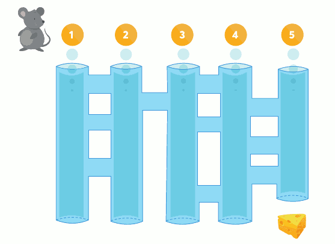

Actividad 1. Entrenando Ratones
Un ratón de laboratorio, llamado XC4, ha sido entrenado por científicos. En un experimento, está situado en la entrada de un sistema de tuberías y el objetivo es que llegue al queso que se encuentra al final de la quinta tubería. Estas son las instrucciones que siempre sigue XC4:
-
Bajar por el tubo hasta que aparezca un túnel nuevo.
-
Cada vez que te encuentras con un túnel nuevo, debes atravesarlo.
-
Vuelve a la instrucción 1.

PREGUNTA
¿En qué entrada debería ingresar el ratón para llegar al queso? Dibuja en la imagen el camino que seguirá el ratón por el laberinto hasta llegar al queso. Utiliza para ello el programa GIMP.
-———————————————— —————————
PARA SABER MÁS
En la tarea anterior, el ratón fue entrenado por los científicos para seguir siempre un algoritmo, el cual, de forma simplificada, es una secuencia de instrucciones ordenadas para hacer algo. En este caso, indica cómo debe moverse el ratón en un sistema de caños interconectados.
Si prestamos atención al algoritmo, vemos que tiene tres instrucciones que presentan una a continuación de otra y se expresan por medio de un lenguaje imperativo (es decir, como órdenes).
El siguiente ejemplo es un algoritmo de más instrucciones, que puede ser utilizado para cambiar una bombilla fundida:
- Buscar una escalera y situarla en posición de alcanzar la bombilla rota.
- Buscar una bombilla nueva.
- Cortar la energía eléctrica.
- Subir la escalera con la bombilla nueva.
- Desatornillar la bombilla rota.
- Enroscar la bombilla nueva.
- Bajar la escalera.
- Volver a conectar la energía eléctrica.
- Comprobar que la bombilla nueva funcione.
- Si funciona, fin del proceso; sino,volver al paso 2.
Como puede observarse en el algoritmo anterior, las instrucciones son claras y precisas, están ordenadas por una secuencia lógica que debe respetarse y especificado un inicio y un fin. De forma más formal, un algoritmo es una secuencia finita y ordenada de pasos para llegar a realizar una tarea determinada.
Ejemplos de algoritmos en la vida cotidiana pueden ser una receta de cocina, un manual de un artefacto que indica cómo parecerlo (por ejemplo: un mueble) o un listado de acciones a realizar en caso de que se produzca una emergencia en un edificio.
En la escuela, los estudiantes también suelen trabajar con algoritmos:
- en ciencia, cuando se siguen las instrucciones para realizar un experimento;
- en matemáticas, cuando se aplica un procedimiento para resolver un ejercicio (por ejemplo, el cálculo de una media);
- en tecnología, cuando se siguen una serie de instrucciones para ensamblar algún artefacto;
- en arte, cuando se aplica alguna técnica de fabricación o composición (por ejemplo, la fabricación de una pieza de cerámica).
-———————————————— —————–
DESAFÍO 1. Reentrenando al ratón
Los científicos están buscando la manera de entrenar de nuevo al ratón para que, ingresando por cualquier tubo, salga siempre por el número cinco. ¿Puedes escribir un algoritmo que resuelva el problema? Haz lo siguiente:
- Escribe el algoritmo haciendo uso del programa LibreOffice Writer e indica todos los pasos que debería seguir el ratón.
- Dibuja sobre la imagen original el camino seguido por el ratón entrando por los tubos 1 y 3, utilizando dos colores diferentes para cada camino. Inserta la imagen en el documento de LibreOffice Writer.